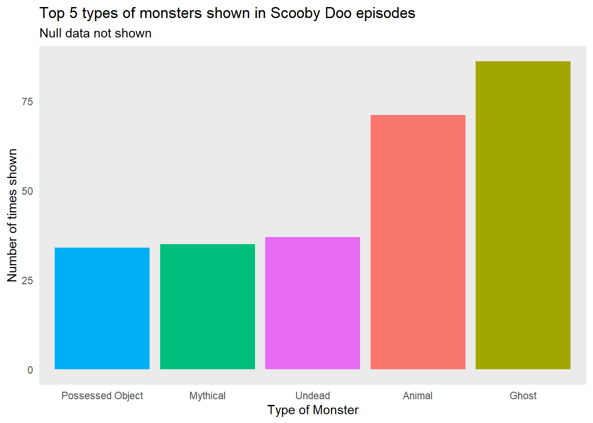
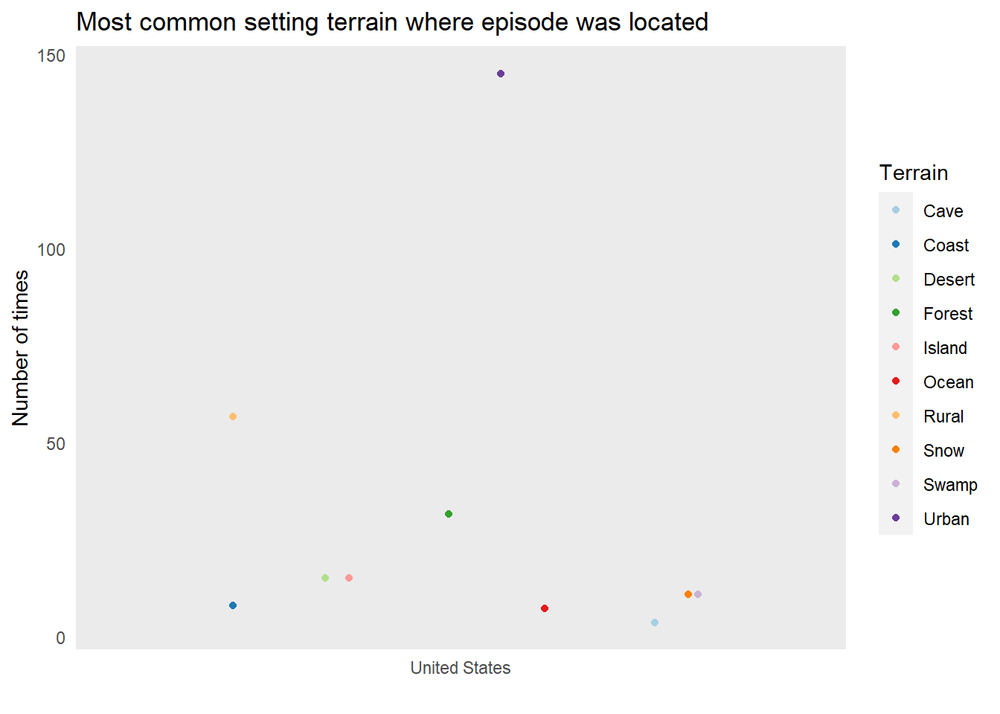
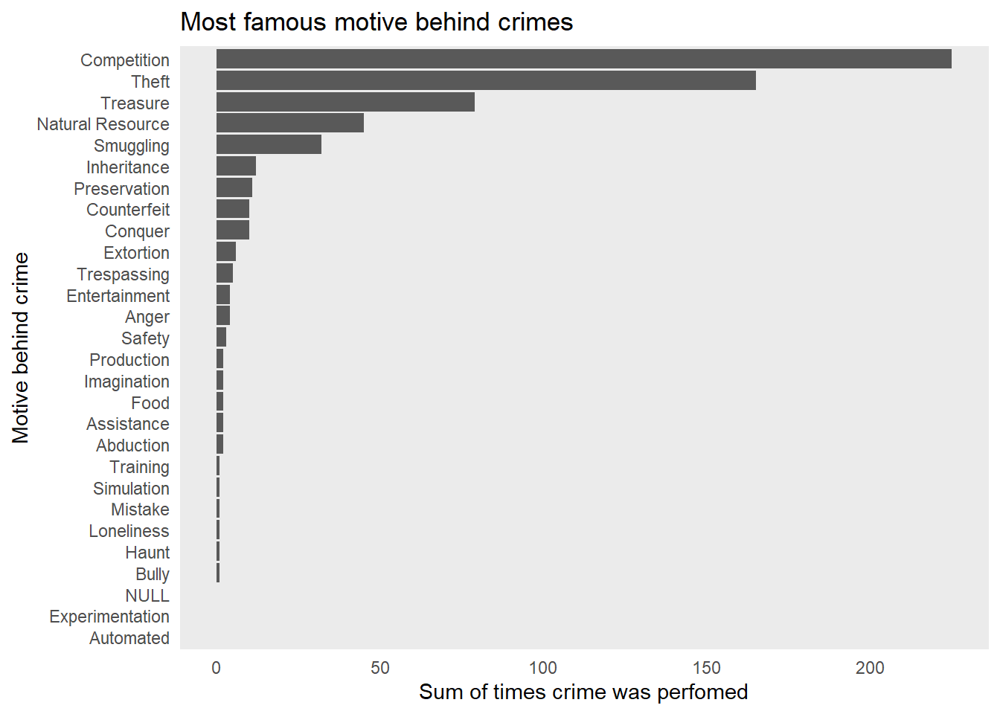
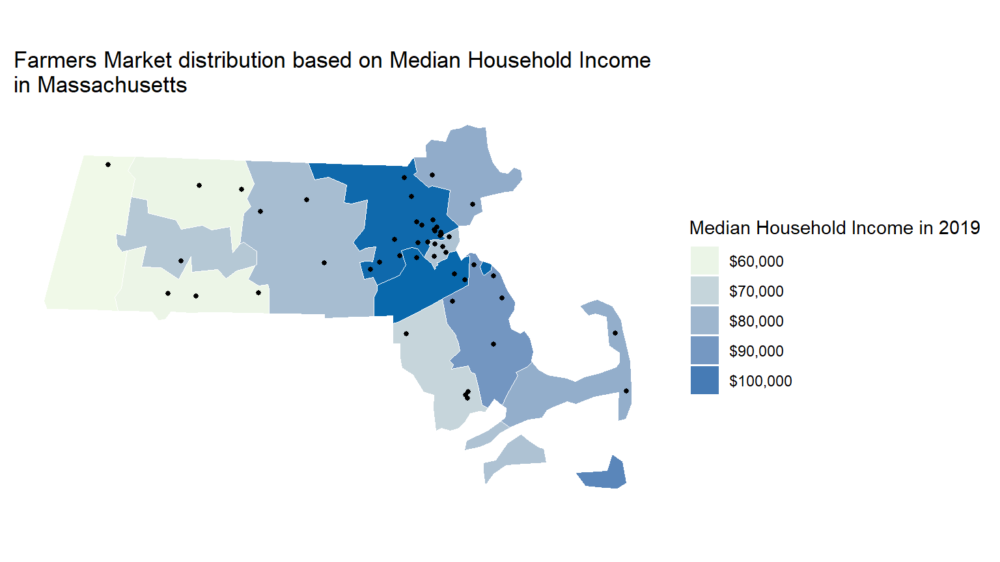

Projects
Camila Maldonado
Last updated on 2021-12-28
#TidyTuesday
What is it? A weekly data project aimed at the R ecosystem. As this project was borne out of the R4DS Online Learning Community and the R for Data Science textbook, an emphasis was placed on understanding how to summarize and arrange data to make meaningful charts with ggplot2, tidyr, dplyr, and other tools in the tidyverse ecosystem. Even though I am not up to date, I sometimes choose topics of my interest to do some wrangling!
Scooby-Do!
Even though I am already an adult, I do love cartoons! Scooby-Do was one of favorites since I was a child. Every Saturday morning I would change the channel from the news and I would sit on the couch to watch one more episode while eating breakfast. Thanks to one of the Tidy Tuesday data sets recommended by Dr. Sara Stoudt and the open source webpage Kable, I was able to bring back some memories with pretty cool facts about this tv show using R.

Mistery solved
While going through the available data, I focus on figuring out the following:
The top 5 most common monsters shown on the episodes. The most common reasons behind the crimes done by the monsters/villains. The most common setting terrain for each episode. Was the old Scooby-Do most watched than the new seasons?
Let’s find out.
#Data wrangling perfomed to get the first barplot.
monster_types <- scoobydoo %>%
select(monster_type,monster_species,monster_species,monster_subtype) %>%
group_by(monster_type) %>%
summarize(numberoftimes = n()) %>%
top_n(n = 6, wt = numberoftimes)
monster_types <- monster_types %>%
filter(monster_type != "NULL")
#monster_types
#Data wrangling perfomed to get sum of how many times a crime was done under the same purpose to later showcase it through a horizontal barplot.
culprits <- scoobydoo %>%
select(culprit_amount,motive) %>%
group_by(motive) %>%
summarize(sum = sum(culprit_amount)) %>%
arrange(desc(sum))
#culprits
#Most Famous settings terrains where Scooby Do episodes were developed. For this visualization, I reduced the terrain scenarios to only those that happened in the United States.
where_scooby <- scoobydoo %>%
select(setting_terrain,setting_country_state) %>%
group_by(setting_country_state, setting_terrain) %>%
summarize(numberoftimes = n()) %>%
top_n(n = 10, wt = numberoftimes) %>%
filter(setting_country_state == "United States")## `summarise()` has grouped output by 'setting_country_state'. You can override using the `.groups` argument.#where_scooby
#The engagement variable is the one that counted how many people watched the episode on the date it was on air.
engagement_top<- scoobydoo %>%
select(title,imdb,engagement,date_aired) %>%
mutate(imdb = as.numeric(imdb)) %>%
mutate(engagement = as.numeric(engagement))
#engagement_topScooby-Dooby-Doo! Don’t be scared!
From the very first appearance of the mysterious monster at the beggining of each episode, I was interested to see if there was a pattern within the type of monsters this show presented. Of course, as our dear Scooby always was scared of, Ghosts were the most popular monsters throughout the series.
ggplot(monster_types, aes(x = reorder(monster_type, numberoftimes), y = numberoftimes, fill = monster_type)) + geom_col() + labs(x = "Type of Monster", y = "Number of times shown", title = "Top 5 types of monsters shown in Scooby Doo episodes", subtitle = "Null data not shown" )+ theme(element_blank()) + guides(fill = "none")
Get in, let’s solve the mistery. The Mistery machine awaits.
Known by almost any fan and non-fan of this tv show can recognize the colorful van drove by the handsome and popular Greg, the leader of the gang. This group of friends traveled mostly all around the world to unmask the villains, yet for this plot, I decided to reduce the terrains to those within the United States. So, to which terrain did our gang traveled the most?
ggplot(where_scooby, aes(y = numberoftimes, x = setting_country_state, col = setting_terrain)) + geom_jitter()+ labs(x = "", y = "Number of times", title = "Most common setting terrain where episode was located", col = "Terrain")+ theme(element_blank()) + scale_color_brewer(palette = "Paired")
There was nothing more exciting than the end of each episode, where the gang explained what really happened and then asked the, most of the times, unexpected villain to explain their reasons behind their maleficent intentions. Turns out that Competition was the main motive…
ggplot(culprits, aes(x = sum, y = reorder(motive, sum))) + geom_col()+labs(title = "Most famous motive behind crimes",x= "Sum of times crime was perfomed", y = "Motive behind crime")+ theme(element_blank())
Old Scooby vs New Scooby.
Seems that Scooby Do was a really great hit between 2005 and 2006. Exactly the age at which I was five years old eating breakfast and watching it from my living room couch.
SDS 192: Intro to Data Science
This is a class I took in last Fall 2021. It was taught by Prof. Albert Kim. We learned how to analyze, wrangle and create data visualizations using R.
MP3: MiniProject, Farmers Market
# Load all your data here. Be sure to be in MP3 RStudio Project mode so that R
# knows where to find all data. Here is an example
library(readr)
Export <- read_csv("Export.csv")
income_data <- read_csv("income_data.csv")
library(maps)
# Load bike trails shapefile and convert to sf object:
farmers_market <- Export %>%
select(x,y,County,State) %>%
filter(State == "Massachusetts")
#farmers_market
map_data_income <- income_data %>%
filter(State == "Massachusetts") %>%
select(FIPS_Code,Median_Household_Income_2019)%>%
group_by(FIPS_Code)
# Load MA cities from CSV and convert to sf object:
farmers_market_sf <- farmers_market %>%
st_as_sf(coords = c("x", "y"), crs = 4326)
#farmers_market_sfWith this map, we are comparing farmer’s market locations in 2021 and average income per Massachusetts county in 2019. Farmer’s markets are intended to bridge the gap between farmers and customers, eliminating the process of delivery which is harmful to the environment. Not to mention, the added benefits of supporting local produce and buying sustainably. Also, farmer’s markets are meant to be affordable due to the cut costs that come from selling directly from farmer to consumer. This way, it is meant to be accessible for low income customers. We will compare average income per county in relation to the amount of farmer’s markets in said county. Thus, we are evaluating if the affordability of the farmer’s market is accessible to low income communities.
Data used: ^(https://catalog.data.gov/dataset/farmers-markets-directory-and-geographic-data) ^(https://www.census.gov/library/publications/2020/demo/p60-270.html)
#Put code to create your static map here:
USA_map <- maps::map("state", plot = FALSE, fill = TRUE)
USA_sf <- USA_map %>%
st_as_sf(crs = 4326)
USA_map <- maps::map("state", plot = FALSE, fill = TRUE)
map_data_mass <-
USAboundaries::us_counties(resolution = "low", states = c("massachusetts")) %>%
select(-state_name)
#RENAME
map_data_mass <- map_data_income %>%
inner_join(map_data_mass, by = c("FIPS_Code" = "geoid"))
my_title <- "Farmers Market distribution based on Median Household Income in Massachusetts"
#FINAL PLOT
ggplot() +
geom_sf(data = map_data_mass, aes(geometry = geometry, fill = Median_Household_Income_2019),
color = "white",
linetype = 1,
lwd = 0.25) +
geom_sf(data = farmers_market_sf, aes( geometry = geometry), size = 1) +
guides(fill = guide_legend(title.position = "top")) +
scale_fill_gradient(low="#F0F9E8", high="#0868AC",labels=dollar) +
scale_color_brewer(palette = "GnBu") +
theme(legend.position = "right", axis.text.x = element_blank(), axis.text.y = element_blank(), axis.ticks = element_blank(), rect = element_blank())+
guides(fill = guide_legend(title.position = "top", direction = "vertical")) + labs(title = str_wrap(my_title, 60), fill = "Median Household Income in 2019") 
((Optional) If you have any additional analysis you would like to add, add it here. This is optional.
Even though this map shows that the most populated counties by farmers markets are those where the median household income is 100K dollars, this could drive us to the conclusion that most of the buyers from the farmers market will be wealthy people. However, it should be noted as well that most farmers markets are usually located in highly populated urban areas such as Plymouth County because these communities lack access to fresh daily products. Some other places in the US have started to create systems with coupons in order to make these markets more accessible to the poor class. The Washington Post also highlighted an important fact in a published article “Moreover, it’s not that farmers market prices are too high but that the supermarket prices with which they compete are too low.”This is the most common issue that citizens face, where super processed food is the most affordable thing for them to eat, yet not the best option for their health. However, we think that more farmers markets should be taken to counties where food deserts exist in order to reduce food insecurity and truly make the purpose of farmers markets possible. This is to bring accessible organic food products to all people, no matter their income, and not just a tourist attraction every weekend.
Final Project, The Simpsons: Was the hype true?
My group partner, Brianna, and I built website where we posted our analysis on The Simpsons. Check it out at this link: https://the-simpsons-2001.netlify.app/index.html